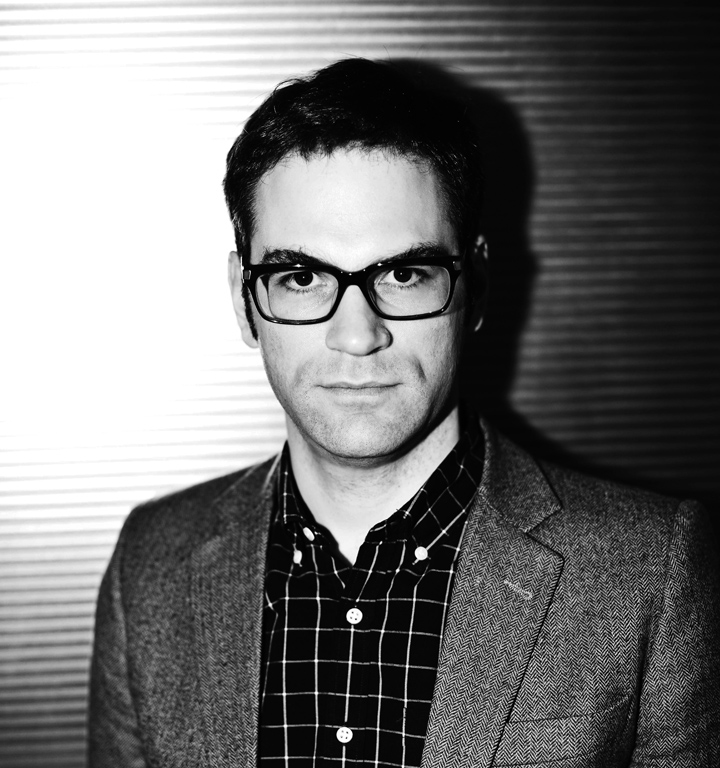

May I See Your Exhibition?
Philip Tinari
“Painting is a way of occupying space on museum walls.” Thus responded Yan Lei to a question—“What is painting?”—posed by Guan Yi to the ten artists participating in his collection show organized in conjunction with Beijing’s newest art fair early last month. That exhibition was staged in a nondescript gallery space belonging to the Danish Cultural Council, located on the ground floor of an upscale apartment complex called “Upper East Side,” down the street from where Yan Lei lives in northeast Beijing. One prominent wall was indeed occupied by eight works from the “Color Wheel” series that has become one of Yan Lei’s trademarks; the one-meter square canvases were hung correctly so that the discerning viewer could see how the color of the bull’s eye in one painting became the color of the background in the next.
The rational logic of these paintings—executed in out-of-the-box acrylics by untrained workers according to a numerically sequenced palette—is as important as the seeming arbitrariness of the shifting contexts in which they are so frequently exhibited. This contrast between work and display, artist and system, authorial intent and discursive apparatus, is the bull’s eye of Yan Lei’s life and work right now, the central dot around which his painting and thinking revolves.
…And yet what Yan Lei produces is not art about the art system but rather about the psychologies and subjectivities that it induces—psychologies that become inseparable from existence itself. Here, what first appears as cunning metacritique eventually reveals its true, anxious face. Yan Lei is, after all, deeply worried about not stacking up, not going to Germany. This anxiety would later ground Yan Lei’s decision to stop painting with his own hand, a decision made not out of a critique of art as commodity (à la his heroes, Warhol and Koons) but out of the conviction that not painting was the only solution to the logic of comparison highlighted by “Are you in the exhibition going to Germany?”—a logic that once manifested itself in competition to participate in international exhibitions, and now surfaces every few months when the latest auction results are posted online.
Perhaps inspired by his predicament—caught between a creative will looking to say something bold and a curatorial system determined to make even the most oblique work into an illustration of Chinese social change—Yan Lei grew sympathetic with the global art-world underclass. At the Villa Arson in Nice, a residency program where he spent the spring of 2004, he decided to make a work about the gatekeeper. “I chose this place, and now I place my heart here, where it will remain forever,” reads the inscription below a photograph of this French woman who worked once as a model for the center’s visiting artists, aging into a receptionist like a Las Vegas showgirl eventually reduced to giving slot-machine change. The inscription describes her life’s work but also that of the mason who slaved namelessly carving inscriptions in the church situated on the Villa’s campus centuries earlier, leaving this biblically inspired line in Latin above a sacred heart in one of that church’s niches: Elegi locum istum ut permaneat cor meum ibi nunc aliis die.
Although Yan Lei himself would not be doomed to remain like this woman in one place forever, angst over his position in the jet-setting global art elite would come to ground another series of works, “Climbing Space.” These works derive from digital photographs taken by the artist of scenes and spaces fraught with geopolitical and art-world intrigue. Some depict villages on Beijing’s periphery that have been earmarked as gallery areas; others show facades of museums in European capitals. But more than anything, this is a series about international air travel, about planes and airports as intermediary spaces between countries and mindsets. They are also implicit rebukes to the nonchalance about hyper-mobility that the art world demands socially; for what could be more crude than asking for a window seat, and then taking a picture out of that window?
It was a short leap from “Climbing Space” to “Super Lights,” a series begun in 2005 and based on works by other painters rendered in dramatically divided monochromes. If the former takes up the subjects of art-world intrigue, the latter directly approaches its objects. His original idea was that these works would exist not as simple reproductions of the originals, but in the same sort of relation to them as a “superlight” cigarette to a stronger one—diluted in power and potency. It is a series theoretically premised on watering down the great works of the past. This series made its point most effectively with “Super Lights-Picasso,” a work based on Picasso’s record-holding “Boy with a Pipe” (Sotheby’s New York, May 2004, $104 million) that was consigned to and later removed from the auction house’s first sale of contemporary Asian art in New York last March. It was then sold by Yan Lei’s former European dealer, prompting him to create another copy for the current show. The five “Super Lights-Hong Kong” works on view in this exhibition pick up on Yan Lei’s complex relationship with the city where he lived throughout the early 1990s. These canvases—kitschy still-lifes of clay pots and musical instruments—mimic five other canvases sold in a commercial gallery with which he has collaborated. They highlight how the city, for all its cosmopolitanism, can lack in taste.
…Philip Tinari

Philip Tinari
Philip Tinari (b. 1979) is director of the Ullens Center for Contemporary Art in Beijing. He is also founding editor of LEAP (tagline: The International Art Magazine of Contemporary China), launched in 2010 and published by the Modern Media Group. Tinari is a contributing editor to Artforum and has written and lectured widely on contemporary art in China. A resident of Beijing for most of the past decade, he holds an A.M. in East Asian studies from Harvard, a B.A. from the Literature Program at Duke, and was Fulbright fellow at Peking University.